来源：https://iqa21iualv.feishu.cn/docx/XJa4db2cjo8POTxtQKqcmfCdnWd
目前没有看到任何仓库，同时接入了stripe和creem 出自 @良辰美 大佬的 FLUX KONTEXT
每一个出海的做网站的人都跟我一样，总一些很难跨过去的大山 出自 @林悦己 大佬的Creem支付配置
这次教练分享了一个带有支付相关内容的开源模版，赶紧拿来学习学习。
学习实践这个模版可以获得：
快速构建MVP（最小可行产品），避免在技术选型和架构设计上消耗过多时间
通过研究模版源码，能够学习到AI SaaS产品的最佳实践和设计模式
结合航海手册的指导，可以更系统地规划产品开发路线，减少试错成本
接下来我会从三月航海先回顾一下，然后是模版项目的实践
在3月Web网站出海航海中，我从单页游戏站起步，完成GSC、GC集成和AdSense申请，随后转向AI站开发。
我个人过于急于求成，忽视了社群资源的重要性。
在AI站开发过程中，我完成了ChatGPT和Gemini API的整合，但在支付系统选择上遇到了瓶颈：
最终，项目转型为导航站：https://generateghibli.org/en
通过这些经历，我有幸接触到了@良辰美 教练分享的https://scys.com/articleDetail/xq_topic/1524141251441252开源模版。这个模版包含了完整的AISaaS基础架构：
多语言、登录鉴权、用户权限管理、积分管理、支付安全、多支付平台、AI生成模块等
掌握这个项目的设计理念，结合航海手册的指导，将为AI站开发打下坚实基础。
可以避免从零开始搭建AI SaaS平台的大量技术踩坑，因为它已经集成了完整的基础架构，包括用户系统、支付体系和AI模块等核心功能
从实践经验来看，没有使用成熟模版会在支付系统选择等关键环节遇到严重瓶颈，这些都是可以通过学习模版来规避的问题
模版不仅提供了技术框架，更重要的是体现了完整的商业思维 - 从用户体验到变现路径都有系统性考虑
接下来，让我详细分享这个模版项目的实践经验
首先从GitHub上克隆项目，在终端运行：
git clone
在编辑器中打开项目，先通过README文档了解项目概况。
项目中还包含docs目录，其中有详细的学习文档和项目配置说明。
浏览完这些文档后，我发现了一个重要问题：
项目原本计划使用bun作为包管理工具，
但项目中存在 package-lock.json
这表明项目中混用了npm和bun两种包管理工具。
为了统一管理，我决定遵循文档建议使用bun，因此删除了 package-lock.json，然后执行：
npm i -g bun #如果没有安装bun，第一步先全局安装一下 #安装依赖 bun i
完成后，项目中会自动生成 bun.lock
我是按照示例当中提供的链接一个一个去申请获取的。
superbase相关值获取的页面
1、
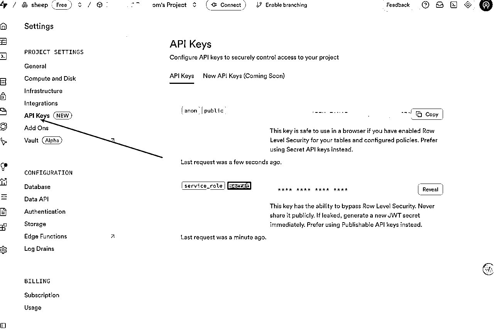
2、
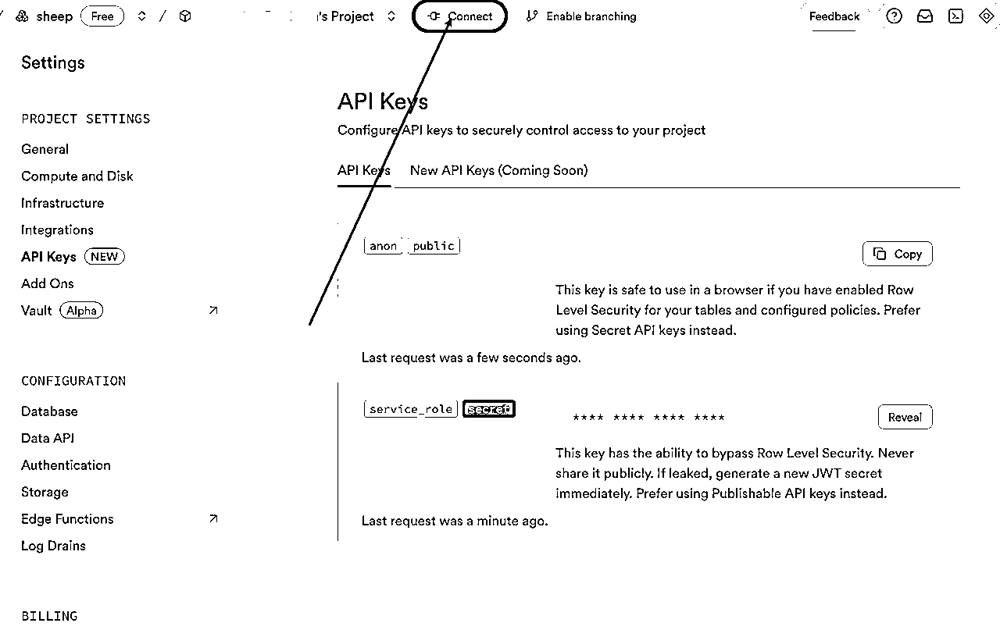
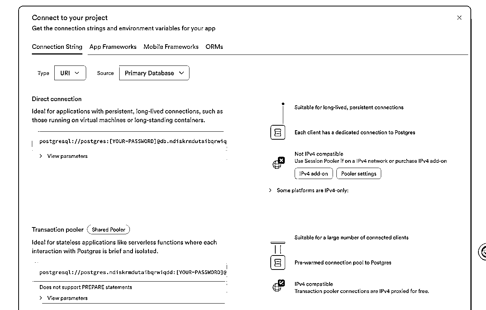
2、Goole OAuth
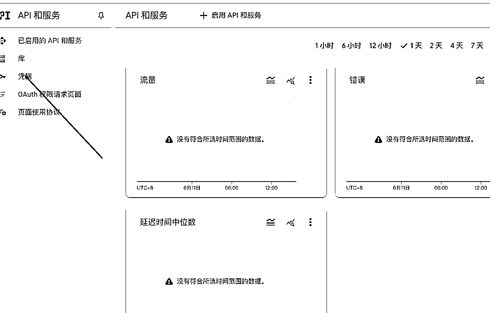
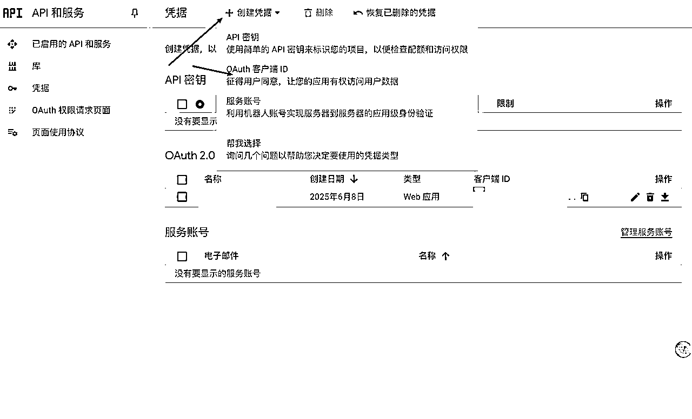
然后第一个选择web应用，其他信息根据你的项目内容去调整，我都是让ai给的信息
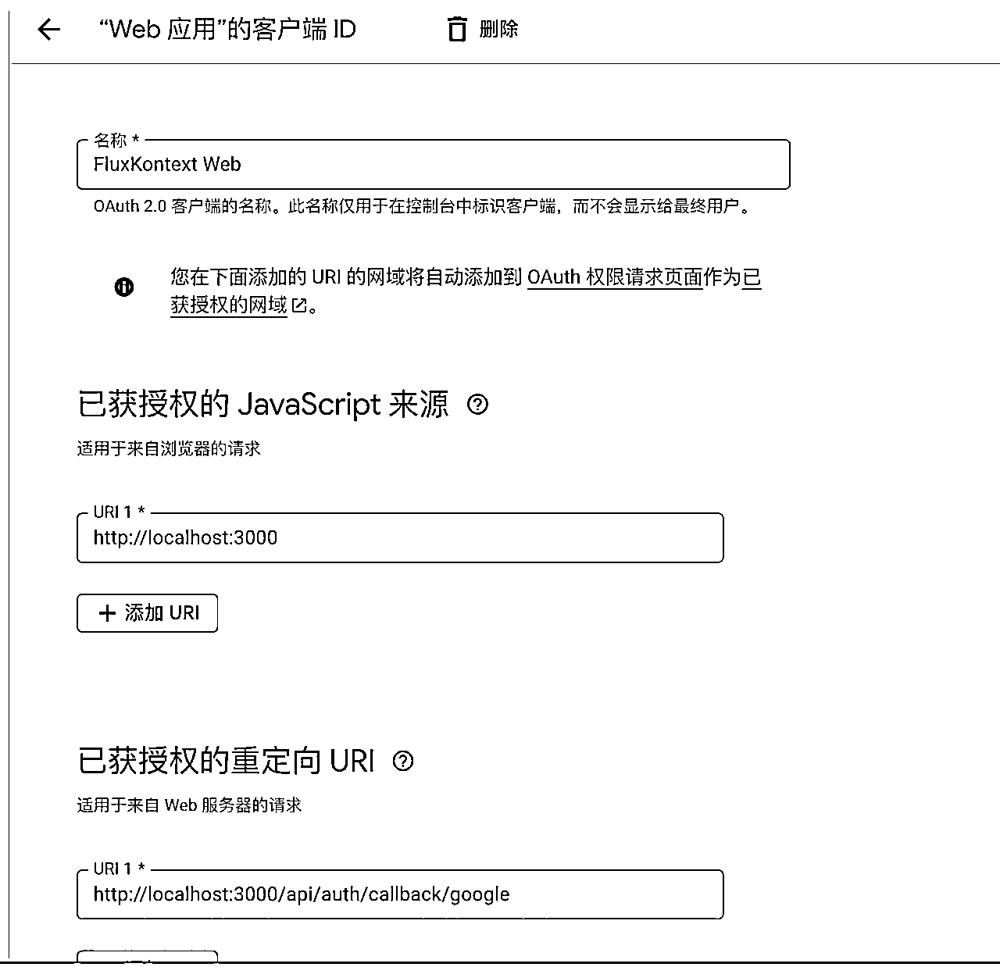
这个R2的创建第一步需要先绑定一下支付账户，可能算是一个卡点
第二个卡点就是api token相关的值在哪个地方，我找了半天才发现藏在api按钮下面，管理API令牌就是了
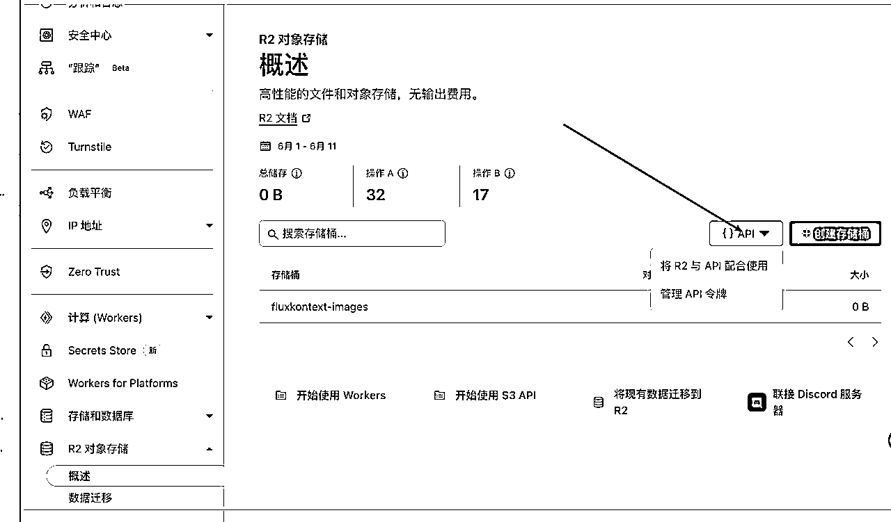
还是在cloudflare上, 大致填写情况如下：填写时根据你本地情况来填写
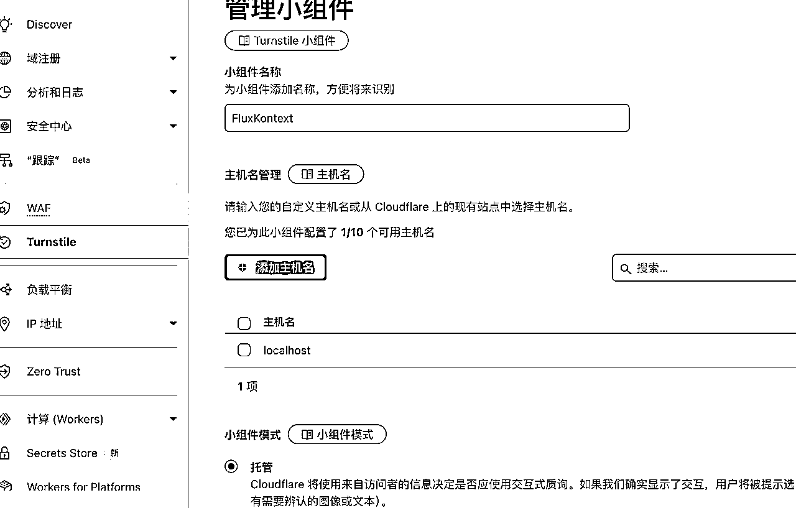
我的creem账户只是注册了账号还没有开通收款账号，我这次本地测试调整主要参考了 @Cheer林悦己大佬的creem的注册教程
https://scys.com/articleDetail/xq_topic/8852488525882522
还有就是Creem官方的说明文档
以及api文档
首先就是测试环境的API_URL是https://test-api.creem.io，然后在Creem后台内：
先去开启 Test mode，然后测试模式下去创建几个产品
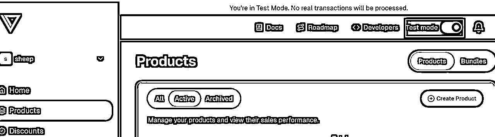
然后点击测试模式开关旁边的Developers,就可以看到apikeys、webhooks了，api key直接复制即可
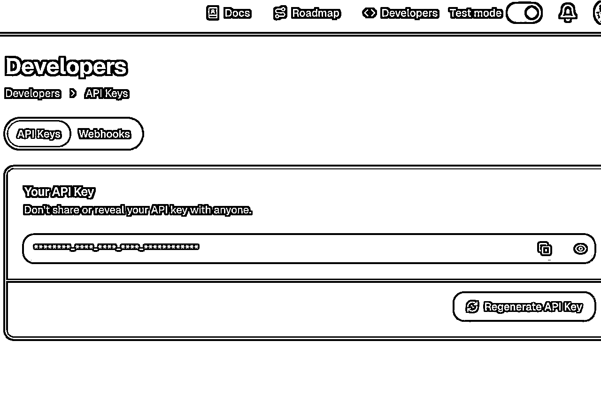
webhook需要先创建，然后如图：
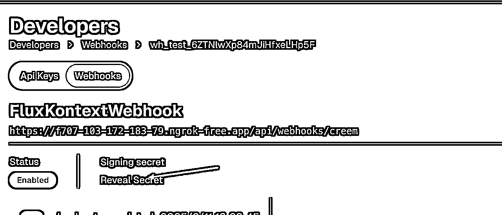
点击之后就可以看到密钥了。
记得关闭stripe，开启creem
基本凑齐也填的差不多了。
由于未仔细阅读文档，我最初直接使用了生产环境的 api-url 进行实际支付测试。
系统立即报错 product not found，表明无法找到相关产品。
经过排查，发现问题源于链接配置不当。解决此问题后，
又出现了新的错误：项目内的产品 ID 与 Creem 平台上的产品 ID 不一致。
尽管尝试借助 AI 修改代码，但问题依然存在。
随后我转向 Creem 官网进行测试，确认了 API 密钥确实可用。
最后，通过仔细对照官方说明文档和 API 文档重新配置，成功完成了 Creem 的支付测试。但修改后的代码还需要进一步测试以确保其稳定性。
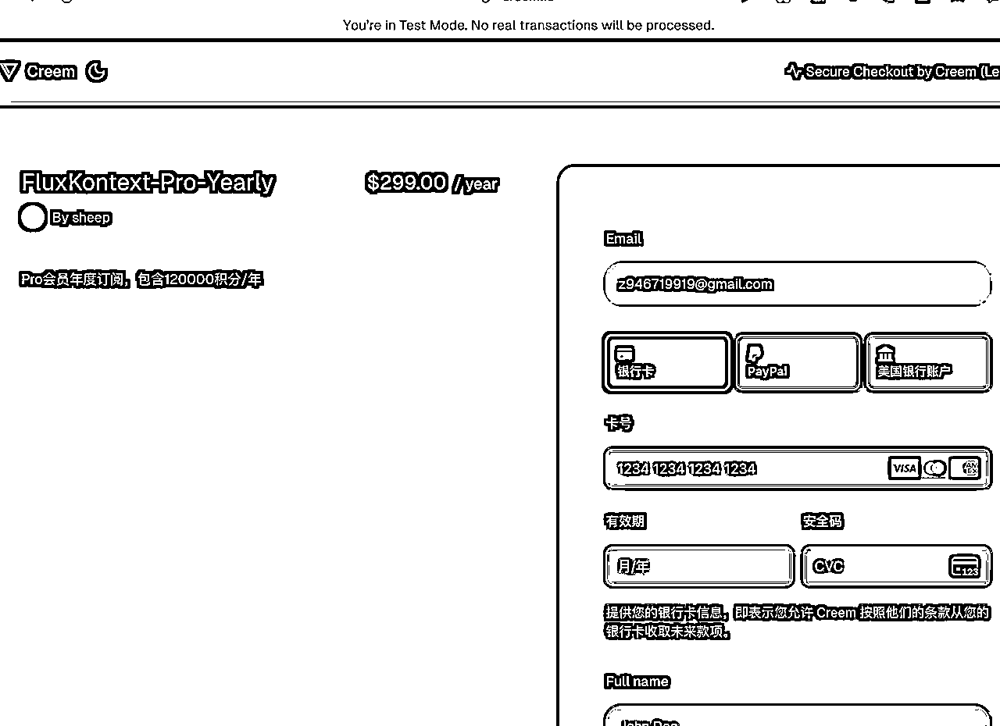
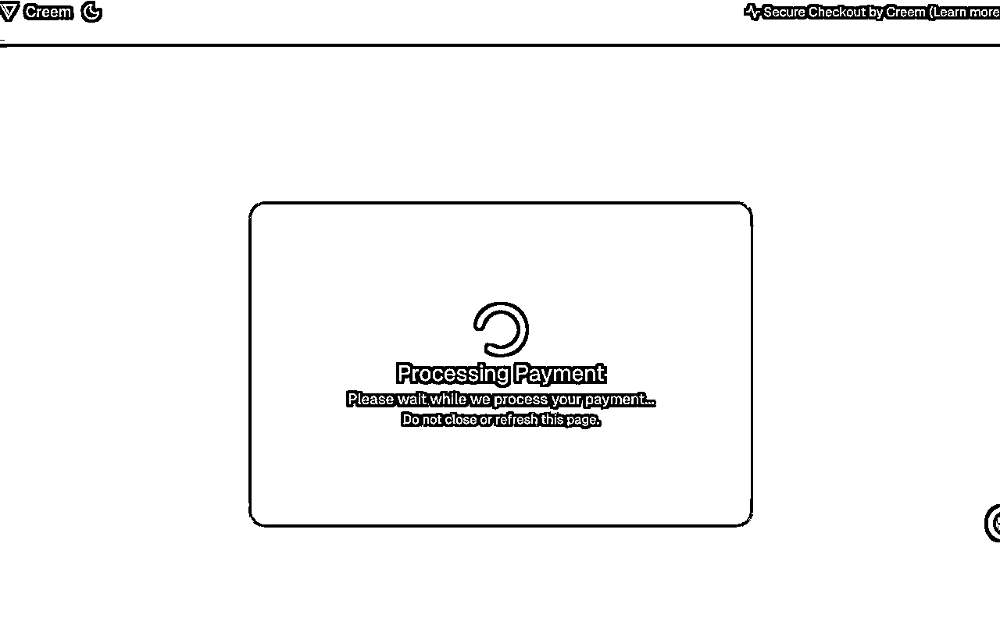
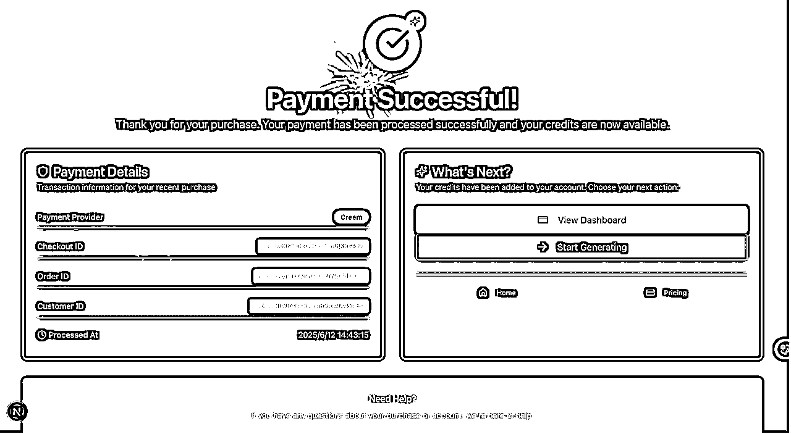
到这里就基本测试结束了，项目内还有goole登录、github登录、ai生图很多地方大家可以配置好密钥自己上手体验体验哇
总结这次项目实践以及web航海回顾的经验：
关键收获：
未来展望：
虽然目前项目还未获得实质性收益，但通过持续学习和实践，相信终将实现预期目标。这次的技术实践经验为后续AI站开发打下了坚实基础，将继续保持开放心态，注重经验总结，推动项目稳步发展。